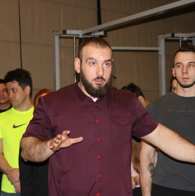
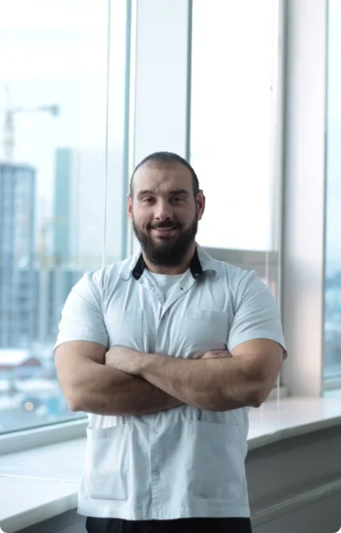

Меня зовут Лабунец Андрей, и большую часть своей жизни я посвятил медицине и спорту. Сейчас я - ярый сторонник здорового образа жизни и фитнеса, но не всегда было так…
Волей судеб, сложилось так, что в далеком прошлом я попал в жуткое ДТП и получил серьезные травмы. Когда я вышел из больницы, кроме последствий от повреждений моего тела, вдогонку я набрал лишних 20 килограмм. Сказались гиподинамия, иммобилизация (т.е. обездвиживание некоторых моих частей тела вообще) и добрая порция стресса и жалости к себе, которые обильно заедались.


Погоревав какое-то количество времени и осознав, что ни официальная медицина с их отсталыми центрами реабилитации и не совсем добрым подходом к пациентам, ни окружающие меня люди не смогут мне помочь, решено было действовать …
Я пошел в ближайший тренажерный зал. Купил себе месячный абонемент и началось: время череды проб и ошибок, испытаний различных методик, подходов и упражнений на собственном больном организме. Давалось все с трудом, тело ныло, молило о пощаде, особенно в прошлом травмированные участки. И тут я понял, что мне не хватает теоретических знаний, что результаты почему-то практически не видны, хотя я выкладываюсь на все 100%.
Начался мой путь изучения анатомии, физиологии и биомеханики человеческого организма, который, как страсть, в дальнейшем подвигли меня закончить сначала Медицинский Университет, пройти несколько узких специализаций (ЛФК, реабилитация и спортивная медицина), отучиться в Москве на кинезиотерапевта, закончить второй ВУЗ по специальности физическое воспитание.
Но самое главное - все это время я не переставал тренироваться и следить за собой, вести здоровый образ жизни.
Еще одной моей страстью, параллельно с медициной, стал фитнес. Причем соревновательный. Познав секреты биомеханизмов нашего тела, я стал получать определенные результаты, а чтобы поднять планку еще выше, решил посоревноваться, так сказать проверить себя.
В результате чего получил звание Мастера спорта по бодибилдингу, что можно сказать шло фоном, как само собой разумеющееся, потому что я понимал, что делал, и это давало свои результаты.
Я никогда не видел себя в профессиональном спорте и не делал на этом акцент, но если было, что показать, то почему бы и нет.
Итогом моей учебы, медицинской практики, а так же использования навыков и понимания процессов и упражнений изнутри, стала моя методика.